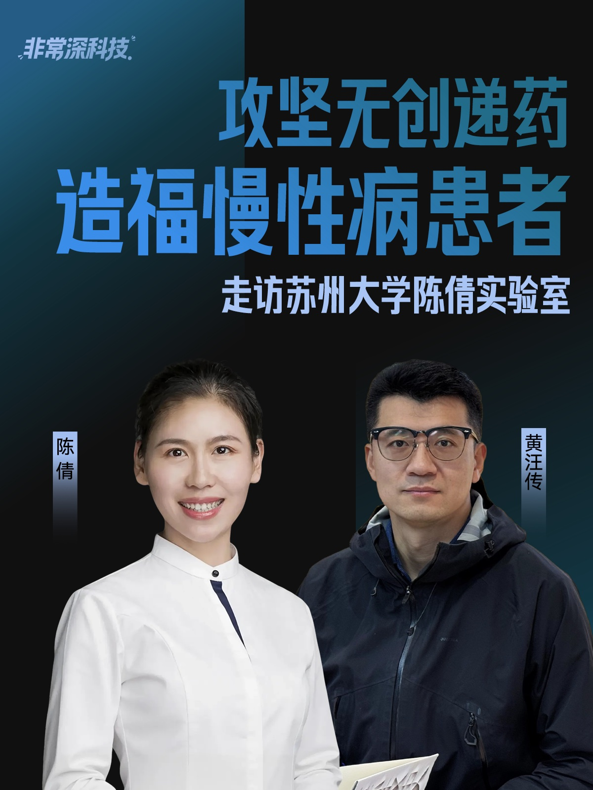

非常深科技
由黄师傅主持的实验室走访视频。把科学家的研究现场、技术难题与产业化线索，以人物故事的方式呈现给更广泛的企业家群体。
DEEPTECH ECOSYSTEM
从内容发现到科学家走访，从闭门课到企业对接，从青年人才网络到成果转化服务——DEEPTECH+ 把黄师傅长期参与的项目放进同一张地图。
An ecosystem designed to turn scientific signal into industrial action.

HUANG SHIFU'S PROJECTS
这几项工作服务同一个目标：让企业、科学家与技术之间的距离，变成可以被理解、验证和持续连接的路径。
由黄师傅主持的实验室走访视频。把科学家的研究现场、技术难题与产业化线索，以人物故事的方式呈现给更广泛的企业家群体。
以专题课程、闭门分享与对话为载体，帮助企业家和团队理解 AI、生命科学、材料、能源等前沿技术的长期变量。
面向会员的每周科技趋势洞察。不是信息搬运，而是从分散信号中筛选需要被持续追踪的技术与产业议题。
以企业的真实技术问题为入口，组织科学家精准对接、会员年会、线上闭门课与峰会资源，让对话进一步走向行动。
“35 岁以下科技创新 35 人”、十大突破性技术、50 家聪明公司等评选，是长期发现技术与人才的观察系统。
从产业研究、技术研判到成果转化与地方创新服务，在高校、科研机构、资本、政府与企业之间建立更准确的协作。
VERY DEEPTECH · WATCH FIRST
这些来自真实实验室走访的内容，是社区最直观的入口：先看见科学家的工作，再决定自己真正想问什么。以下顺序代表当前最值得企业家优先进入的四个现场。

FROM CONTENT TO CONNECTION
内容让企业家认识一个方向；课程帮助看清它的节奏；社区让问题被带到科学家面前；当技术与需求出现真实交点，转化才有可能发生。
查看科学家网络JOIN THE COMMUNITY
只要你愿意把企业的下一步问得更深一点，DEEPTECH+ 就能成为进入科学与产业前沿的一扇门。